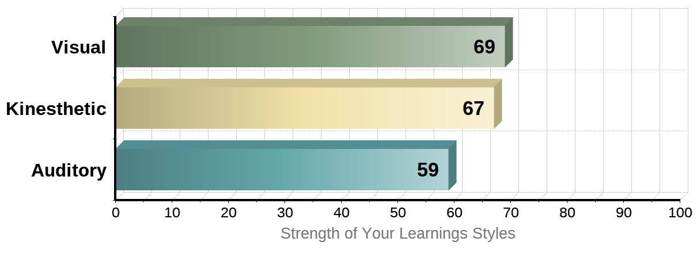

Personal Profile
These tests give a great perspective to understand who I am and a better idea of how I can use my personality to improve myself. I can find my weaknesses and disadvantages from the tests.
These tests give a great perspective to understand who I am and a better idea of how I can use my personality to improve myself. I can find my weaknesses and disadvantages from the tests.

For the result of the first test: the Myers-Briggs test, I am an INTP-A called Logician. I stands for Introverted, N for Intuitive, T for Thinking, P for Prospecting and A for Assertive. Introversion means that I prefer staying with just one or two people, rather than large groups. I am more comfortable focusing on my inner world, rather than what's happening externally. Intuition means that I always closely observe my surroundings and do not care about the details of things. I am interested in the big picture of things. Thinking means that I prefer to collect objective information to make decisions. Knowledge is my vital tool to verify my thinking. I sometimes dismiss emotional responses, either my own or those of others. Prospecting means I can handle unexpected challenges flexibly. I also can catch unexpected opportunities because of my flexibility.
According to the learning style test, visual learning is my primary learning style. Kinesthetic is my secondary learning style. Auditory is my least preferred learning style. The result shows that I can learn efficiently by sight. Videos, charts, diagrams can help me be a better learner.
According to the learning style test, visual learning is my primary learning style. Kinesthetic is my secondary learning style. Auditory is my least preferred learning style. The result shows that I can learn efficiently by sight. Videos, charts, diagrams can help me be a better learner.
The results of these tests helped me understand myself. When forming a group I know that I may not be a good leader and I would do a good job following the leader's arrangement. Charts, graphs and videos will also support my learning. Overall, the results of my exams combined indicate that I am a rational person and good at analyzing questions. I can do review work before submitting group assignments. In group discussions, I should try to be confident and express more ideas.